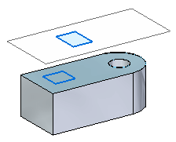
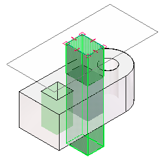
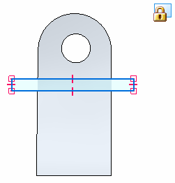
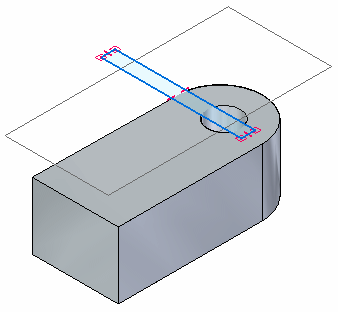
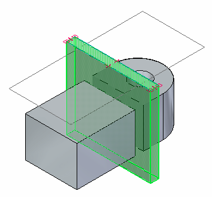
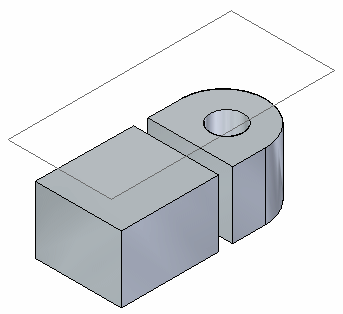

Defining 3D sections of models: best practices
Use the following guidelines when drawing and positioning the profile or sketch to define the shape used to cut the model.
Drawing a sketch or profile for 3D sections
For best results when creating a 3D section, you should create a closed 2D profile or sketch.
-
A profile or sketch used to cut the model can consist of single elements and shapes, such as lines, rectangles, and circles, or of multiple elements, such as lines and arcs.
-
A closed profile or sketch yields better results than an open profile or sketch.
If you draw a cutting plane that consists of more than one element, the cutting plane must meet the following requirements:
-
The elements must meet at their end points.
-
The elements cannot cross each other.
-
Any arcs in the cutting plane cannot be the first or last element.
-
Any arcs must be connected to a line at both ends of the arc.
Sketch or profile position in relation to the model
Sketches and profiles that originate outside the model (do not touch the model) yield better results. In the following example, the top sketch located on an external plane is better than the sketch located on the model face.

Extent of the cut in relation to the model
If the extent of the cut is positioned so that it cuts through and beyond the model extents, then you get better results. In the following example the taller cutting shape yields better results.

Options on the 3D Section command bar specify the extent of the cut. You get the best results using one of these options:
-
Finite Extent
-
Symmetric Extent
If you want to use the Through All option, it is best to use a cutting plane shape that cuts vertically through the model from top to bottom, or from bottom to top.
Do not use a shape that cuts at angles other than 90 degrees.
Summary
You get the best 3D section results with:
-
A closed shape,
-
Positioned outside the range of the model,
-
The Finite Extent (or Symmetric Extent) option is selected on the Section command bar,
-
And the cutting shape extends beyond the model edges.




You get the worst results with:
-
An open shape,
-
Positioned completely inside the range of the model,
-
That does not extend the cutting shape beyond the model edges.